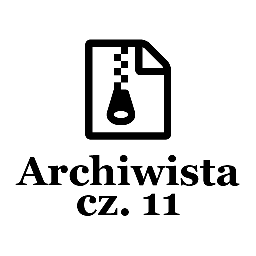

Post archive
Archiwista [cz. 11 - Porządki]

W tym tygodniu skupiłem się na poprawieniu funkcjonalności aplikacji. Pierwszą rzeczą, którą poprawiłem był wyjątek pojawiający się podczas odczytywania pliku z ustawieniami. Następnie zająłem się wyświetlaniem projektu nad którym aktualnie pracujemy. Resztę tygodnia spędziłem na testowaniu rozwiązań, które pozwoliłyby na prawidłowe działanie skrótów klawiszowych.
Wczytywanie ustawień
Problem z ustawieniami występował podczas wczytywania z pliku.
public static void Load()
{
XmlSerializer xs = new XmlSerializer(typeof(UserSettings));
try
{
using (var sr = new StreamReader(SettingsPath))
{
Settings = xs.Deserialize(sr) as UserSettings;
}
}
catch (InvalidOperationException e)
{
// Some error with settings file, create Default one.
Settings = new UserSettings();
Save();
}
catch (IOException e)
{
//TODO: find out why this error occurs, that something is reading file already,
// even if it gets good data.
Console.WriteLine(e.Message);
}
}Po użyciu XmlSerializer do odczytania informacji z pliku zostawał rzucany wyjątek typu IOException informujący o tym, że plik został już otwarty przez inny proces. Próbowałem zapisać dokładnie ten sam kod bez użycia klauzuli using(), niestety błąd cały czas występował. Rozwiązaniem okazał się strumień przygotowany wcześniej ze zdefiniowanymi prawami dostępu do pliku. Metoda wczytująca ustawienia wygląda następująco:
public static void Load()
{
XmlSerializer xs = new XmlSerializer(typeof(UserSettings));
try
{
using (var sr = new StreamReader(new FileStream(SettingsPath,
FileMode.Open,
FileAccess.Read,
FileShare.ReadWrite)))
{
Settings = xs.Deserialize(sr) as UserSettings;
}
}
catch (Exception e)
{
// Some error with settings file, create new one from scratch.
Settings = new UserSettings();
Save();
}
}Wybrany projekt
Mechanizm tworzenia kopii potrzebuje mieć informacje o projekcie, aby wykonać kopię zapasową. W tym celu napisałem mechanizm pozwalający nacisnąć na nazwę projektu dwukrotnie — co wywoła metodę powiadamiającą o zmianie wybranego projektu.
private void SelectProjectClick(object sender, EventArgs e)
{
if (sender is ProjectItemControlViewModel project)
{
Storage.Settings.SelectedProject = project.Project;
}
}Dzięki temu w ustawieniach posiadamy wybrany projekt i możemy odczytać informacje gdzie znajdują się jego pliki źródłowe. Ważną rzeczą jest też poinformowanie użytkownika, który projekt jest aktualnie wybrany. Podczas przypisania projektu w ustawieniach w akcesorze set wywoływana jest metoda UpdateWindowTitle informująca główny ViewModel o tym co ma wyświetlić jako tytuł aplikacji.
public Project SelectedProject
{
get
{
return _SelectedProject;
}
set
{
if (_SelectedProject == value)
return;
_SelectedProject = value;
// Update window title
Storage.UpdateWindowTitle();
}
}Skróty klawiszowe
Skróty klawiszowe sprawiły mi w tym tygodniu najwięcej problemów. Pierwszym rozwiązaniem, jakie wypróbowałem było stworzenie mechanizmu tasków na które oczekiwałem z nadzieją że przytrzymanie klawisza nie wywoła go jeszcze raz. Niestety dosyć szybko zauważyłem, że takie rozwiązanie nie ma prawa działać. Kolejną rzeczą, którą spróbowałem było stworzenie flagi informującej o tym że zaczął się proces wywołania metody eventu oraz metodę informującą o jego zakończeniu. Niestety i to nie spełniło swojego zadania. Problemem cały czas był mechanizm eventów. Mianowicie nie byłem w stanie zablokować ich przychodzenia. Ostatni pomysł, który mi przyszedł do głowy okazał się być dobry. Pierwszą rzeczą, jaką zrobiłem było stworzenie mechanizmu kolejki. Kiedy zostanie wywołany skrót klawiszowy zamiast rozpoczęcia procesu tworzenia kopii wybrany projekt zostanie dodany do kolejki. Kolejka posiada własną nieskończoną pętlę, która w przypadku pojawienia się zadania wykonuje je. Nieskończona pętla jest uruchamiana na samym początku i kończona, kiedy główny ViewModel wywoła swój Destruktor.
public static async Task ProcessTask()
{
while (true)
{
if (Tasks.Count > 0)
{
var TaskToProcess = Tasks.Dequeue();
foreach (var project in TaskToProcess)
{
BackupFiles(project);
}
}
await Task.Delay(TimeSpan.FromSeconds(1), MainWindowViewModel.wtoken.Token);
}
}Mechanizm kolejki sam w sobie nie rozwiązuje problemu dużej ilości inputów ze strony skrótów klawiszowych. Rozwiązaniem, które zastosowałem jest porównywanie czasu ostatniej kopii. Jeżeli kopia była zrobiona co najmniej 10 sekund temu mechanizm pozwala na dodanie nowej kopii do kolejki. Następnie nieskończona pętla wykonuje kopie zapasową.
public static void Create(object sender, EventArgs e)
{
if (Storage.Settings.SelectedProject == null)
{
return;
}
// Where >= 0 mean that last copy was made at least 10 sec ago
if (DateTime.Now.AddSeconds(-10).CompareTo(LastTask) >= 0)
{
LastTask = DateTime.Now;
var projects = GetProjectInformation(Storage.Settings.SelectedProject.SourcePath, Storage.Settings.SelectedProject);
Tasks.Enqueue(projects);
}
}Kończąc
Aplikacja obecnie jest całkowicie funkcjonalna. Można już z niej korzystać przy pracy z projektami. Co prawda nie wszystkie funkcjonalności są jeszcze dostępne, ale nie przeszkadza to przy tworzeniu kopii.
Podczas pisania tego wpisu zauważyłem pewną rzecz. Mianowicie teraz mechanizm zabezpieczający przed ciągłym trzymaniem skrótu klawiszowego generuje tylko i wyłącznie zestaw informacji o wybranym projekcie. Następnie dodaję go do kolejki, gdzie zostanie utworzona na podstawie tych informacji kopia. Niestety między czasem, kiedy projekt zostaje przekazany do kolejki, która może w tym czasie już coś robić, a czasem zaczęcia tworzenia kopii mogą wystąpić już jakieś zmiany w plikach źródłowych. W związku z tym kolejnym rozwinięciem tego mechanizmu będzie stworzenie tymczasowego folderu ze skopiowanymi plikami dla każdego zestawu dodanego do kolejki. To już w następnym tygodniu.
Do skończenia aplikacji pozostało poprawienie błędu z przewijaniem tekstu ścieżki do końca, dodanie możliwości edycji informacji o projekcie, podłączenie ustawień użytkownika, możliwość wysłania wiadomości o znalezionym błędzie oraz możliwość wygenerowania projektu do wysyłki.
[KodNaGit]